Address
8865 Stanford Boulevard
Suite 131
Columbia, MD 21045
Columbia, Maryland
Your go-to dispensary for premium cannabis in the Columbia and Baltimore area, open every day and ready to serve recreational and medical customers.
Visit Remedy Columbia
8865 Stanford Boulevard
Suite 131
Columbia, MD 21045
Call for product availability, medical pickup assistance, or store information.
Monday - Sunday
9:00 AM - 11:00 PM
Lobby doors close at 10:45 PM.
Adult Use
No medical card required. Maryland residents and visitors who are 21 or older are welcome with valid government-issued photo identification.
Browse recreational menuRegistered Patients
Present your Maryland medical cannabis patient ID for access to the medical menu, medical-specific products, and potential tax benefits.
Browse medical menuBrowse Our Menu
Shop one of Columbia and Baltimore's widest selections of quality cannabis products, with options for experienced consumers and first-time visitors.
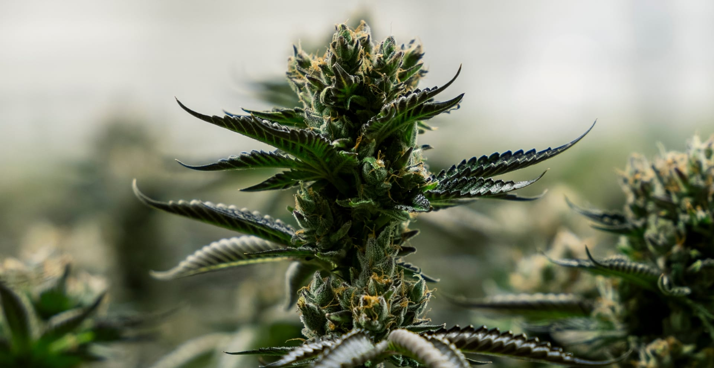
Indica, sativa, and hybrid strains from top Maryland growers.
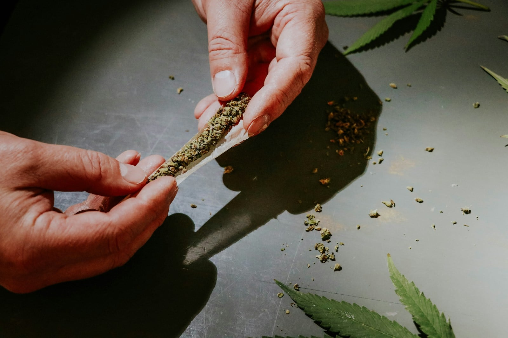
Ready-to-enjoy singles and multipacks without sacrificing quality.
Discreet cartridges and all-in-one devices from leading brands.
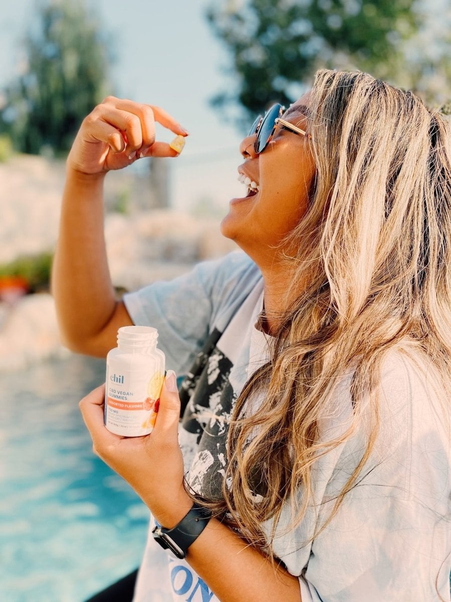
Precisely dosed gummies, chocolates, beverages, and more.
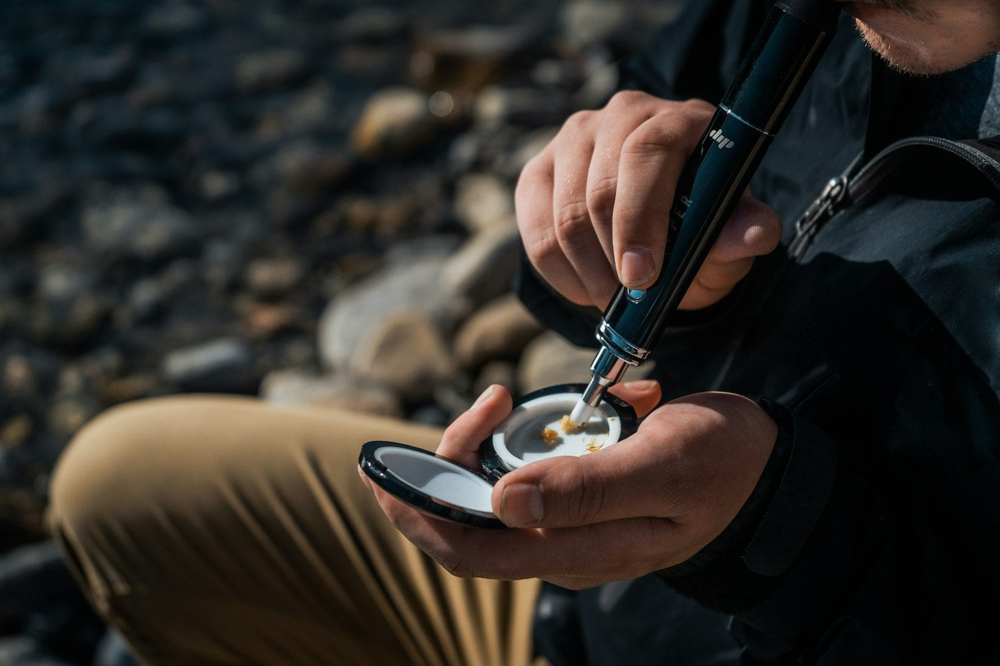
Wax, shatter, live resin, and rosin for experienced consumers.
Precise sublingual options plus pipes, grinders, papers, and gear.
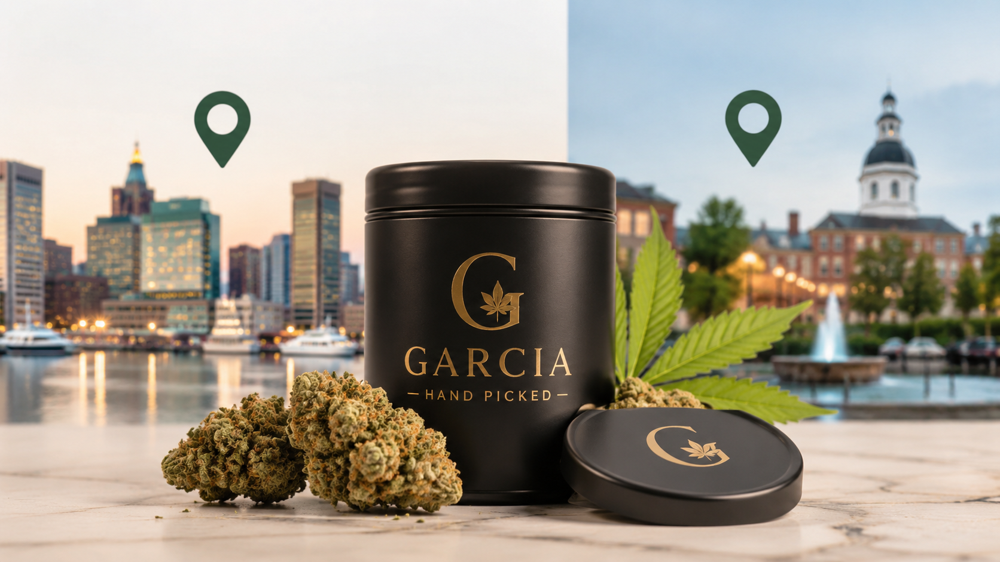
Featured at Remedy
Garcia Hand Picked is one of the most talked-about premium craft cannabis brands available at Remedy Maryland. Inspired by Jerry Garcia, the brand centers quality, authenticity, and hand-selected genetics.
Premium Craft Cannabis
Small-batch growing techniques let cultivators pay close attention to each plant. The result is flower with complex flavor profiles, rich terpene content, and consistent potency.
Garcia Hand Picked products use airtight black-and-gold containers designed to preserve freshness, aroma, and quality from harvest to first use. New drops are added regularly, so check the current menu before visiting.
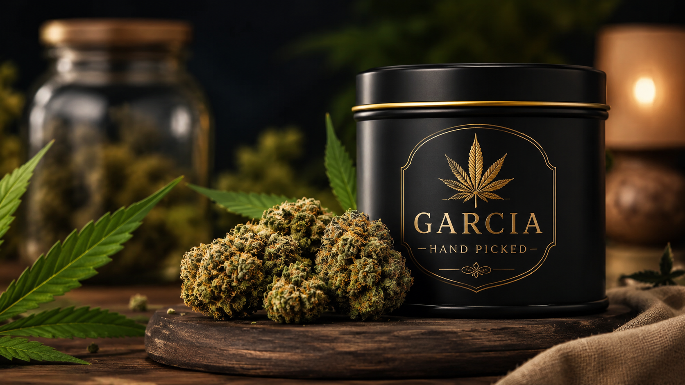
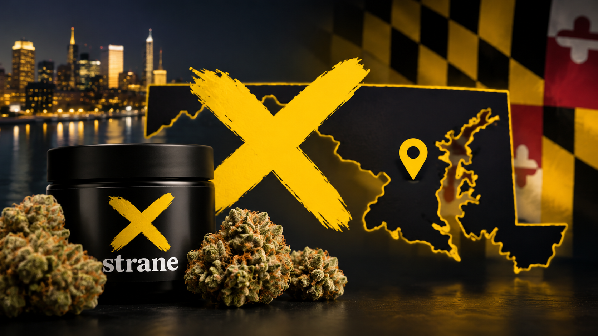
Also in Stock
Strane is known for bold branding, consistent quality, and a broad selection designed to meet cannabis consumers wherever they are in their journey.
Two Maryland Stores
Both Remedy locations offer recreational and medical menus, online ordering, knowledgeable staff, and an extensive selection.
8865 Stanford Blvd #131
Columbia, MD 21045
(443) 542-0948
Open daily, 9 AM - 11 PM
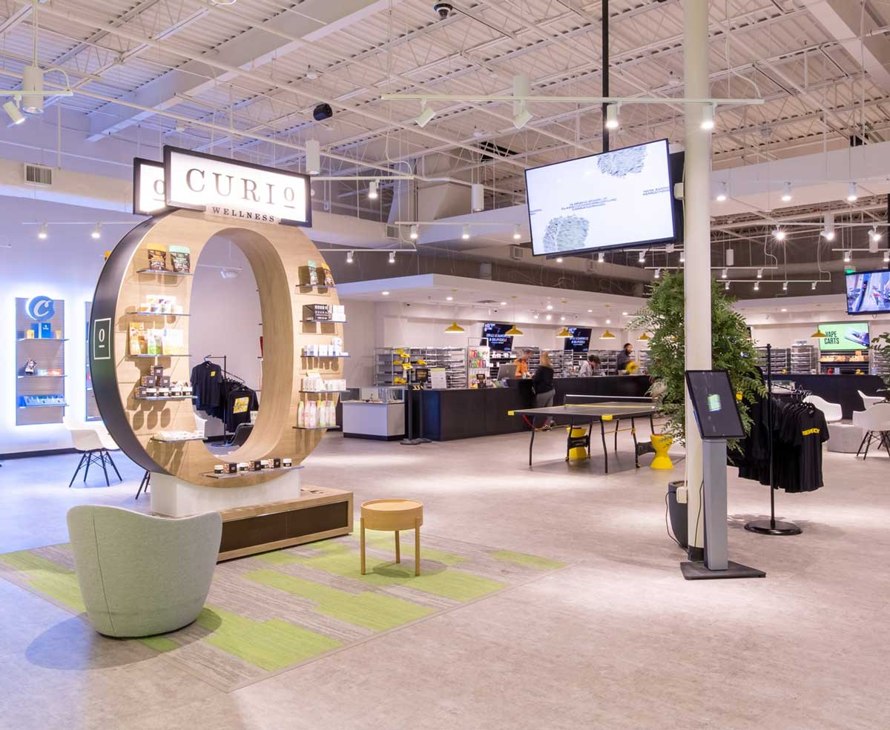
7165-C Security Blvd
Windsor Mill, MD 21244
(443) 348-3297
Open daily, 9 AM - 11 PM
8865 Stanford Boulevard
Remedy Columbia is easy to reach from the region's airports, downtown destinations, parks, and major highways.
About 40 minutes. Take I-395 N, State Highway 295 N, and MD-32 W. Exit at Broken Land Parkway, then continue by Snowden River Parkway toward Stanford Boulevard.
About 19 minutes. Take I-195 W to I-95 S, then MD-175 W. Exit at Snowden River Parkway and continue toward McGaw Road and Stanford Boulevard.
About 10 minutes. Continue from Governor Warfield Parkway to Little Patuxent Parkway and Rouse Parkway, then turn onto Dobbin Road.
About 10 minutes. Follow Ten Mills Road and Columbia Road to Little Patuxent Parkway, continue onto Rouse Parkway, then turn onto Dobbin Road.
Around Columbia and Baltimore
Remedy Columbia is close to shopping, parks, museums, and Baltimore landmarks. Make a full day of it, then stop by before heading home.
10-minute drive
10-minute drive

25-minute drive
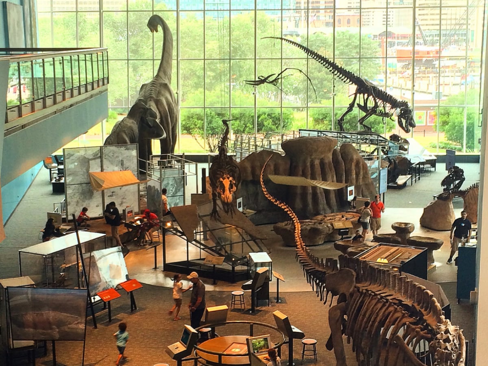
20-minute drive
20-minute drive
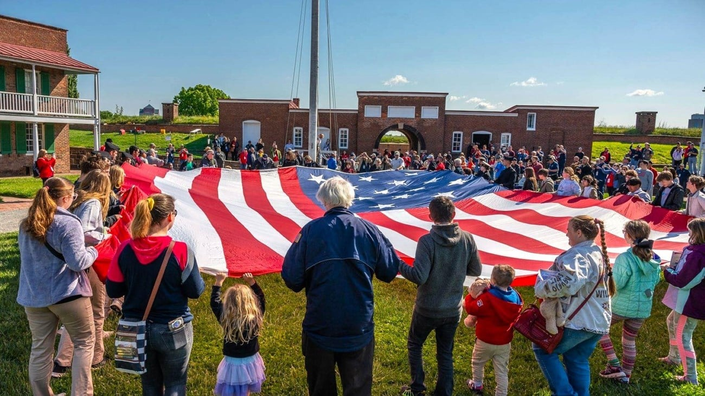
28-minute drive
Fast and Convenient
Browse and place a preorder before you arrive, or take your time shopping in person.
Select Remedy Columbia, then choose the recreational or medical shopping experience.
Browse current inventory, choose your products, and proceed through online checkout.
Wait for the ready notification, then bring the required identification for quick in-store pickup.
Choose the Right Menu
Remedy Columbia serves both adult-use consumers and registered medical cannabis patients.
Maryland residents and visitors who are 21 or older can shop with a valid government-issued photo ID. No medical card is required.
Registered Maryland medical cannabis patients can access a dedicated medical menu by presenting a valid patient ID at check-in.
Local Columbia Signals
Located near Snowden River Parkway, Dobbin Road, and the I-95 corridor, Remedy is convenient from Columbia, Ellicott City, Jessup, Laurel, and surrounding communities.
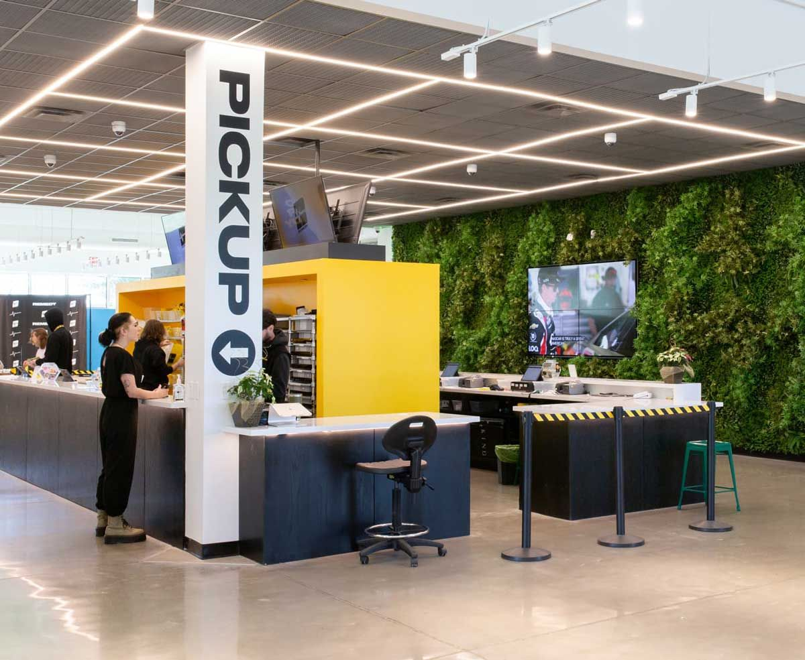
Open Daily
8865 Stanford Boulevard, Suite 131
Columbia, Maryland 21045
9 AM - 11 PM
Lobby doors close at 10:45 PM
Routes to Remedy Columbia
Choose a nearby starting point to open turn-by-turn directions to Remedy Columbia at 8865 Stanford Boulevard.
Local Customer Feedback
“Man listen, the atmosphere is amazing and welcoming. The staff is dope. My guy Britte was beyond informative, helpful and to me a good spirited individual. Go see my guy, they have good deals and believe me you will love it! This is a real deal review.”Napoleon Epps Jr Google review
Open Every Day
Columbia's and Baltimore's premier cannabis destination, serving recreational customers and medical patients seven days a week.